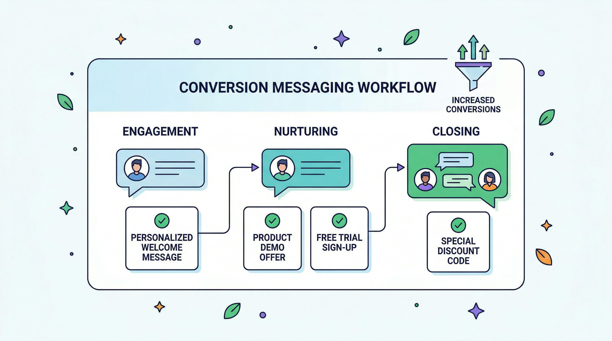

Hey {Name} — saw your message about {Pain}.
Quick win: {1 line insight}.
Want me to send the 3-step plan I’d use in your case?Totally fair. Usually this comes down to certainty, not budget.
If we can help you {Outcome} in {Timeframe}, would that be worth exploring?
Happy to show a simple path.Quick one — based on your {goal}, this 1 tweak usually improves results fast: {tip}.
Want the full playbook?We used this flow with a similar business and recovered {result}.
Want me to map the same structure for you?Last nudge: should I close your file, or send the exact setup steps?